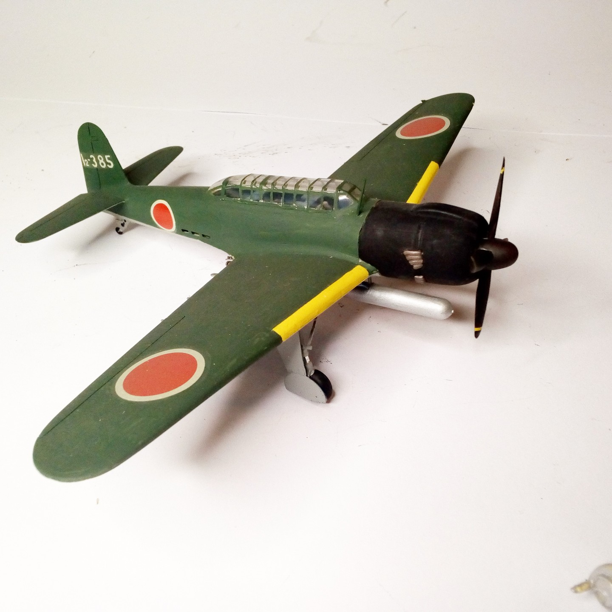

Aerei · scale model archive
Nakajim Type 12 Tenzan 'Myrt'
Nakajim Type 12 Tenzan 'Myrt' — Kit: Fujimi, Scale: 1/72. Zuikaku aircraft carrier 1944 #1/72 #Fujimi

Photo gallery
English description
Zuikaku aircraft carrier 1944
#1/72 #Fujimi
Descrizione italiana
Zuikaku aereo autorier 1944.